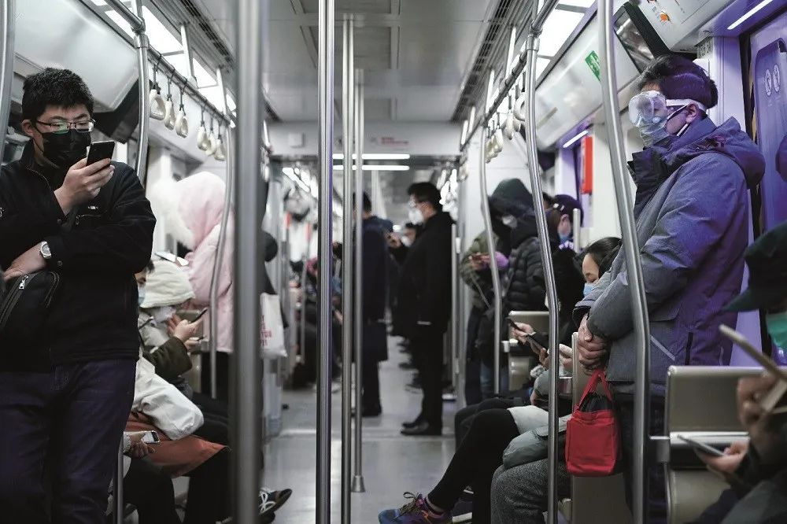

李铁：应科学提高疫情防控效率，降低社会成本
原文链接 备份链接 减少行政方式作出各种不必要的防控要求，减少对企业运行的过度干预，强化科学管控和提高治理水平，提高城市防控效率，应该是城市管理者迫切需要考虑的问题 文 | 李铁 虽然防范新冠肺炎疫情已经取得了明显的效果。但是当前面临着 …

由于一个城市治理决策的失误，造成了全国以及全社会的巨大损失，问题到底出在哪里？今后如何避免类似失误？

文 | 李铁
从1月23日武汉“封城”开始，全国城乡都一级响应，举国动员全面防疫。虽然到目前为止，除重点疫区外，其他城市和地区的防疫情况都有明显好转，一些地方和城市的复工复业也在稳步有序地进行，但是一部分地方和城市仍存在着一定的风险和恐惧心理，仍然采取高级别的防控手段。
可以说，这是自1949年以来第一次因疫情引发全国总动员。由于一个城市治理决策的失误，造成了全国以及全社会的巨大损失，以至于到现在还没有从疫情灾难中解脱。
我们在继续进行防疫总动员的同时，是否要反思，我们到底做错了什么？或者说问题出在了哪里？
很多人反思的时候把矛头对准了责任追究和公共防疫体系的缺失等，还有很多文章谈到了城市治理问题，谈到了城市规划问题，谈到了城市公共服务和话语权问题等等。
其实我们有更多理由，通过这次疫情对如何认识城市问题作出总结。尽管我们已经生活在一个城市化高速增长的时期，在学习发达国家经验的同时，也走出自己独特的城市化道路。但是即使到了今天，我们似乎并没有认真研究过中国的城市问题。
未被重视的城市治理
到2019年底，中国已经拥有8.48亿的城镇常住人口，城镇户籍人口约为6.2亿，常住人口城镇化率达到了60.6%，户籍人口城镇化率预计达到44.4%，两者相差16.2个百分点。
如此巨大的城镇人口，如此高速增长的城市化进程，按道理来讲，我们应该把城市作为国家治理的重中之重。但是到目前为止，我们不仅研究上远远滞后，而且和其他方面比，在政策操作层面上也缺乏系统性指导，至少我们在出台的政策文件中很少看到关于城市治理的系列性文件。比如，每年都会发布中央一号文件，作为指导农村发展改革的重要政策指导，但是相应却没有针对城市发展改革的文件。
当前中国国情已经告诉人们以下几个基本事实。
一是城市人口占总人口比重已经远超农村，总量已经超过欧盟、美国以及日本人口的总和，城市经济占国民经济比重已经达90%以上。
二是中国的城市治理应该是社会治理的重点，而且可以通过城市带动农村治理。因为中国城市化进程还在进行中，未来不仅仅要通过提升城市化质量，解决存量的农业转移人口市民化和落户问题，新增的城镇人口还会提高至少10个以上百分点，相当于还有几亿农业转移人口和农村人口需要进城落户定居。要解决他们在城镇生活面临的实际问题，问题重点在城市而不在农村。另外，解决三农问题的关键也在于城市，在于城市如何接纳更多的农村人口，如何通过减少农民促进农业的适度规模经营，如何通过非农产业的发展来有效利用农村资源，如何促进城市资本下乡来带动农村发展等。
三是社会未来的风险指数已经从历史上的农村转向城市，也就是说，城市发生任何危机都可以影响到全国，武汉疫情已经让我们吸取了惨痛的教训。而未来可能的危机不会仅局限在疫情上，经济和社会的风险无处不在，哪怕一件十分微小的事情都可能引发轩然大波。
四是互联网用户接近80%都在城市，现代信息交流和舆论传播都以城市为载体，而新的技术创新也都是在城市产生，当然，最重要的技术变革也是通过海量城市人口的需求变化转化为应用。
五是未来就业的重点也是在城市。各类不同规模的工业和服务业的发展依赖于城市，也给国家和城市创造了税收。如何适应产业的发展，适合于不同人口就业的需求，如何发挥不同规模城市的作用，已经是摆在我们面前亟需解决的问题。
城市治理不等于地方治理
中国的城市不同于欧美发达国家，以及被这些国家的文明体系影响的一些东亚国家。我们长期以来看重的城市治理，偏重于作为国家治理体系中地方治理的一个重要组成部分，整体来看，城市治理体系是自上而下一贯到底的模式，大前提是服从于国家治理的需要。现实中，自上而下的指令虽然在一定程度上被市场所代替，但是在很多方面——无论是经济还是社会管理，传统计划经济管理方式仍在以不同的形式影响着国家治理体系，进而影响到城市政策的贯彻和落实。所以城市的管理者往往更看重的是上级政府的要求，而严重弱化了自身对经济社会发展问题的实际解决能力。
基于上面的认识，就可以理解为什么大部分城市管理者在面对问题的时候，首先考虑的是上级政府的要求。而在强化担责的治理体系中，出于所谓的不担责心态，偏好于按照上级政府的意见执行，或者是学习上级政府的经验和做法，认为起码这样不会出现大的问题。如果一般性的日常工作中遵从这样的做法，维持城市经济和社会的正常运转没什么问题，但是一旦突发性事件发生，则可能大大耽误解决问题的最佳时机。
中国目前已经是世界第二大经济体，国家治理体系不仅要适应经济增长的变化，而且更应该重视城市化、城市经济和社会治理内容的变化。研究城市问题不能只停留在地方治理的理念，而是应该把城市当作一个人口和要素高度集聚的经济社会单元，来考虑城市治理的特殊性。
城市治理不只是城市建设
回顾1949年来的历史，我们研究城市问题的出发点曾经出现过很多变化，从工业化发展的重要载体，到农产品的供给是否能够保证城市的需求。上世纪80年代后，城市改革的重点是国企改革，之后地方则进入了轰轰烈烈的大搞城市建设时代。我记得上世纪90年代我们到地方城市调研，几乎所有地方政府的官员，他们对城市化的理解就是建设，招商引资。在他们的工作安排中，城市化涉及的人口公共服务问题，在政府的议程中往往不及建设和招商引资重要。
进入21世纪，中国城市的发展重点变成了房地产，原因在于，来源于房地产的收益可以解决地方政府的各种开支需求。围绕着房地产发展，城市又进行了新一轮的开发和建设，城市形象发生了翻天覆地的变化。但是涉及到人的问题，涉及到城市居民需求的公共服务问题，涉及到城市外来人口的问题，虽然在中央宏观政策中经常提出各种要求，但是在城市落实的具体层面上，仍然让位于城市建设、土地出让以及招商引资等。实际上十分清楚，目前的地方债务大多是因城市房地产过度开发和城市建设铺的摊子过大所致。但是从深层次的角度追寻产生城市债务的原因，或者是探究由城市而产生的各种需要解决的体制性问题，至今仍未被作为研究的重点。
经济学家们并不热衷于研究城市，因为研究宏观的金融、货币、财政和企业政策显得更为高大上，而且这些体现国家话语权的参政议政思路，更为符合舶来的理论体系。对于城市管理者来说，既然在城市层面上探讨不了所谓的更为宏观的经济社会问题，从自身的角度和立场出发，研究城市发展中迫切需要解决的现实利益问题，可能是更为实际的选择。
最能够保证城市利益的是城市规划。因为所有的城市建设和空间资源的安排，包括房地产建设等，都要必须要有规划。正因为如此，城市问题被视之为技术问题，成为了规划设计图纸的问题，以及一些迫切需要解决的局部性问题，诸如交通、社区治理、治安问题等等。正是由于各种现实因素的组合，使得各方对城市的认知或者研究，在现行体制下更偏重于技术，而偏离了经济社会全面发展和以人民为中心的主轴。
由于认知和研究的严重滞后，导致了一些城市管理者长期以来重视物质建设，而忽视了对软环境的塑造，使得公共服务资源严重缺失。恰恰在当今城市化高速发展的中国，与人口和城镇居民有关的各种直接需求，才是影响到经济社会发展出现各种问题的直接诱因。而这种小小的诱因，哪怕是一两个传染性疾病的扩散，就可以变成影响全国及世界的巨大社会危机。未来要提高城市治理水平，还是在于提升对“城市”及“人”的认知，在于如何解决公共服务资源供给严重不足的问题，在于建立以人民为中心的社会治理体系。
重新认识城市治理
历史的重复往往不是在同一个轨迹上，可能因人而引发的经济社会风险，不仅仅限于在这次疫情，或许还潜藏在其他多个方面。
这次疫情我们的提醒是，从直接原因看，要重视对传染病的防控，建立更有效的防疫体系；从社会舆论看，要允许社会有透明的信息传递渠道，防止人为因素和行政管理的体制性因素妨碍突发性公共事件的应对。
但是从更深的角度去挖掘，我们真的了解城市问题吗？对这么多千万人口、几百万人口的超大城市和特大城市的发展中可能发生的经济社会问题，我们有从各种治理体制的层面上做过更为深刻的反思吗？我们延续了几千年的国家对地方治理的传统结构，是否需要适应城市化进程而有所转变？我们是否需要开始认真反思传统的地方治理方式与现代城市治理方式的本质区别？
反思这次疫情以极快的速度从一个城市扩散到全国，最重要的原因是人口大规模地流动，这其实已经超出了医学的范畴，但这只是城市问题的一个方面。疫情未来还可能影响到上亿人的就业问题，可能涉及到他们生活质量改善和提高的问题，涉及到千万个中小企业的生存问题，涉及到如何区分公共信息传播中的真实信息和谣言的问题等等。整体而言，疫情对我们脆弱的城市化进程是一次严峻考验。
放在中国的城市化进程的大背景下，必须从更多方面，以及更为全面的角度来反思疫情，重新认识城市治理中所存在的各种体制性问题，研究中国城市发展中独特的轨迹和规律。同时，总结国际经验，研究如何把城市问题作为国家经济和社会治理的重中之重，探寻更符合国情并适应现代社会发展需要的城市化路径，我想这次应该是一次挑战和机遇。
作者为中国城市和小城镇改革发展中心首席经济学家；编辑：朱弢

▲点击图片查看更多疫情报道
责编 | 黄端 duanhuang@caijing.com.cn
本文为《财经》杂志原创文章，未经授权不得转载或建立镜像。如需转载，请在文末留言申请并获取授权。
原文链接 备份链接 减少行政方式作出各种不必要的防控要求，减少对企业运行的过度干预，强化科学管控和提高治理水平，提高城市防控效率，应该是城市管理者迫切需要考虑的问题 文 | 李铁 虽然防范新冠肺炎疫情已经取得了明显的效果。但是当前面临着 …
原文链接 备份链接 各级政府的绩效考评正在从“增长锦标赛”逐渐转为侧重治理能力、治理体系的新绩效评估框架，这次疫情可能是转折点。如何提升市场应对突发事件的能力和韧性，也是体现国家综合治理能力提升的重要标志 2020年2月12日，位于武汉体 …
原文链接 备份链接 房地产并不能在经济大船外“独善其身”，它取决于两个外部因素：疫病的控制和经济的复苏 图/IC 1、和SARS期间的03年楼市没什么可比性 在这场疫情中，关心楼市、讨论房价的人少了，这是一件好事。 一些专业号针对2003 …
原文链接 备份链接 _ 在疫情危机发生的时刻，我们应该反思的，是应当及早强化推进户籍管理制度改革和外来人口市民化的进程，解决人口大规模流动带来的社会问题 _ 图/法新 文 | 李铁 新型冠状病毒引发的全国性防疫之战，面临的最大挑战就是传播 …
原文链接 备份链接 编者荐语： 马子本来计划春节出游，结果回来过个年，就因疫情封城动弹不得了。我俩见个面都难。天门疫情确实严峻，希望大家能多给予关注。瘟疫面前，命无贵贱，人人平等。 © 图文 阅路山 2020年2月4日 立春 武汉封城的 …